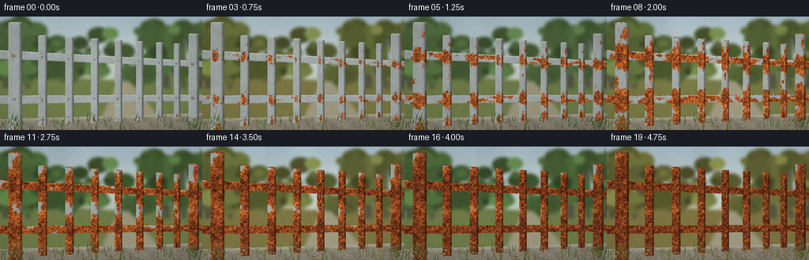
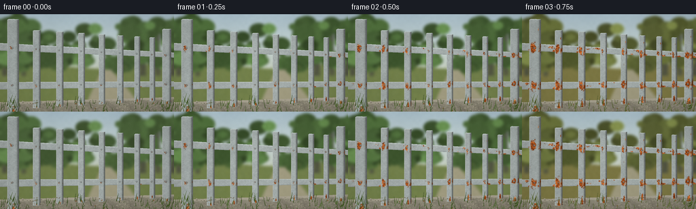

CODING AGENTS AS PIXEL WORLD MODELS
traex/GPT-6.1-Sol · material_0044
点击播放 · 原生 RGB 像素
逐轮保存的候选
回放视频、检查图与代码变化。
每份候选均可单独播放。实际图片检查记录在下方工具轨迹中。
候选 01播放与检查图
点击播放 · 原生 RGB 像素


展开代码变化
--- 上一保存版本
+++ 本次保存版本
@@ -0,0 +1,307 @@
+"""Deterministic, entirely procedural RGB timelapse of outdoor fence corrosion."""
+from pathlib import Path
+import json
+import math
+import numpy as np
+from PIL import Image, ImageDraw, ImageFilter
+import artifact_io
+
+HERE = Path(__file__).resolve().parent
+SPEC = json.loads((HERE / 'task_spec.json').read_text())
+W, H = SPEC['width'], SPEC['height']
+S = 3
+WW, HH = W*S, H*S
+RNG = np.random.default_rng(92754)
+Y, X = np.mgrid[0:HH, 0:WW].astype(np.float32)
+X /= S; Y /= S
+
+def noise(nx, ny, seed):
+ r = np.random.default_rng(seed)
+ a = (r.random((ny,nx))*255).astype(np.uint8)
+ return np.asarray(Image.fromarray(a).resize((WW,HH), Image.Resampling.BICUBIC), dtype=np.float32)/255
+
+N1 = noise(17,11,107)
+N2 = noise(59,37,229)
+N3 = noise(153,89,416)
+N4 = noise(401,229,818)
+GRAIN = RNG.normal(0,1,(HH,WW)).astype(np.float32)
+FBM = .44*N1+.32*N2+.17*N3+.07*N4
+
+# Fixed, gently out-of-focus garden behind the fence.
+trees=[]
+for i in range(220):
+ x = RNG.uniform(-25,280)
+ y = RNG.uniform(11,76)
+ # openings above a sunlit clearing in the middle
+ if 73<x<179 and y<52 and RNG.random()<.73: continue
+ rad = RNG.uniform(3,18)
+ trees.append((x,y,rad,RNG.uniform(.65,1.2),RNG.random()))
+far_grass = [(RNG.uniform(0,256), RNG.uniform(80,142), RNG.uniform(1,8),RNG.random()) for _ in range(1200)]
+pebbles = [(RNG.uniform(0,256),RNG.uniform(127,144),RNG.uniform(.2,1.2),RNG.random()) for _ in range(470)]
+blades = [(RNG.uniform(-3,260),RNG.uniform(131,151),RNG.uniform(2,15),RNG.uniform(-4,4),RNG.random()) for _ in range(235)]
+leaflitter = [(RNG.uniform(0,256),RNG.uniform(131,146),RNG.uniform(1,3),RNG.uniform(0,math.pi),RNG.random()) for _ in range(55)]
+
+def poly(draw, pts, fill):
+ draw.polygon([(round(x*S),round(y*S)) for x,y in pts],fill=tuple(int(np.clip(c,0,255)) for c in fill))
+
+def background(t):
+ season = .5+.5*math.sin(2*math.pi*(3.65*t-.08))
+ autumn = max(0,math.sin(2*math.pi*(3.65*t-.39)))**3
+ cold = max(0,math.sin(2*math.pi*(3.65*t-.68)))**4
+ # a quiet overcast sky, softly changing illumination rather than camera motion
+ sky0=np.array([163,185,197]); sky1=np.array([205,211,196])
+ a = np.clip(Y/104,0,1)[...,None]
+ arr=sky0[None,None,:]*(1-a)+sky1[None,None,:]*a
+ cloud=noise(8,6,391)
+ cloud=np.roll(cloud, int(t*WW*.42),axis=1)
+ arr += ((cloud-.5)*10)[...,None]
+ im=Image.fromarray(np.uint8(np.clip(arr,0,255)))
+ d=ImageDraw.Draw(im)
+ poly(d,[(0,77),(64,75),(151,81),(256,69),(256,144),(0,144)],(109+15*autumn,124-10*autumn,74-8*autumn))
+ # Far tree trunks, retained from year to year.
+ for x,w in [(7,4),(35,3),(210,5),(232,4),(254,6)]:
+ poly(d,[(x-w/2,17),(x+w/2,18),(x+w,91),(x-w,91)],(78,82,67))
+ d.line([(int(x*S),int(42*S)),(int((x-14)*S),int(21*S))],fill=(78,81,68),width=2*S)
+ for x,y,r,shade,var in trees:
+ green=np.array([64+var*27,91+var*35,50+var*22],float)
+ brown=np.array([132+var*30,105+var*26,49+var*20],float)
+ col=(green*(1-autumn*.45)+brown*autumn*.45)*shade
+ col = col*(1-cold*.12)+np.array([120,125,104])*cold*.12
+ d.ellipse((int((x-r)*S),int((y-r*.75)*S),int((x+r)*S),int((y+r*.75)*S)),fill=tuple(np.clip(col,0,255).astype(int)))
+ # A faint garden path recedes into the center of the frame.
+ poly(d,[(150,82),(163,82),(216,144),(121,144)],(155,151,126))
+ for x,y,l,z in far_grass:
+ if 146-(y-83)*.4 < x < 164+(y-83)*.82: continue
+ c=(99+int(z*38)+int(autumn*12),115+int(z*30)-int(autumn*10),60+int(z*25))
+ d.line([(int(x*S),int(y*S)),(int((x-1.6)*S),int((y-l)*S))],fill=c,width=max(1,int(S*.5)))
+ im=im.filter(ImageFilter.GaussianBlur(2.0*S))
+ ar=np.array(im,dtype=np.float32)
+ ar += ((N2-.5)*3)[...,None]
+ # Rough concrete plinth in front of the grass. Water and rust stain its top.
+ gy=130-.030*X
+ top=(Y>=gy)&(Y<gy+3.3)
+ wall=Y>=gy+3.3
+ concrete=np.zeros_like(ar)
+ shade=(N3-.5)*13+(N4-.5)*10+GRAIN*1.3
+ concrete[:]=np.array([142,139,123])+shade[...,None]
+ concrete-=np.maximum(0,Y-gy-3)[...,None]*.68
+ grime = (N1*.45+N2*.55)*np.clip((Y-gy)/16,0,1)*13
+ concrete-=grime[...,None]*np.array([.8,1,.65])
+ ar[wall]=concrete[wall]
+ ar[top]=np.clip(np.array([162,157,141])+shade[top,None]*.5,0,255)
+ # Cast fence shadows, soft and nearly stationary with the passage of seasons.
+ shadow=np.zeros((HH,WW),np.uint8)
+ sm=Image.fromarray(shadow); sd=ImageDraw.Draw(sm)
+ for x in [18,53,87,119,149,176,201,223,244]:
+ sd.polygon([(int((x-2)*S),int((130-.03*x)*S)),(int((x+8)*S),int((130-.03*x)*S)),(int((x+29)*S),144*S),(int((x+18)*S),144*S)],fill=65)
+ sh=np.asarray(sm.filter(ImageFilter.GaussianBlur(1.5*S)),dtype=np.float32)/255
+ sh*=np.clip((Y-gy)/3,0,1)
+ ar*=1-sh[...,None]*.33
+ # Accumulating orange-brown runoff underneath the main uprights.
+ runoff=np.zeros((HH,WW),np.float32)
+ for x in [18,53,87,119,149,176,201,223,244]:
+ runoff+=np.exp(-((X-x-1)/(2.0+4*t))**2)*np.clip((Y-gy)/4,0,1)
+ runoff=np.clip(runoff*(.14+.86*N2)*t*t*.34,0,.4)*wall
+ ar=ar*(1-runoff[...,None])+np.array([105,66,36])*runoff[...,None]
+ return ar,season,autumn,cold
+
+# Surface descriptions. Quadrilateral front face, top and side bevels are rasterized
+# directly; no 3-D library or learned rendering model is used.
+objects=[]
+def add_object(name,q,kind,index):
+ rng=np.random.default_rng(610+index*83)
+ seeds=[]
+ if kind=='rail':
+ for i in range(19):
+ seeds.append((rng.uniform(0,1),rng.uniform(0,1),rng.uniform(.035,.10),rng.uniform(.4,1.2),rng.uniform(.025,.4)))
+ # long, vulnerable underside exposed to lingering droplets
+ for u in [.075,.207,.34,.464,.58,.688,.79,.875,.955]:
+ seeds.append((u,.92,.045,.68,.015))
+ else:
+ xc=(q[0][0]+q[1][0])/2
+ top=q[0][1]; bot=q[3][1]
+ for yy in [49+.047*xc,106-.009*xc]:
+ v=(yy-top)/(bot-top)
+ seeds.append((.40,v,.75,.13,.015))
+ seeds.append((.93,v+.025,.45,.18,.10))
+ seeds.extend([(.6,.98,.8,.16,.05),(.89,.10,.37,.10,.16)])
+ for i in range(9 if kind=='post' else 6):
+ seeds.append((rng.uniform(0,1),rng.uniform(.08,.96),rng.uniform(.27,.75),rng.uniform(.065,.17),rng.uniform(.17,.49)))
+ objects.append(dict(name=name,q=np.asarray(q,np.float32),kind=kind,seeds=seeds,index=index))
+
+add_object('upper rail',[(-6,43),(263,57.8),(263,64.4),(-6,53.4)],'rail',0)
+add_object('lower rail',[(-6,101),(263,99.9),(263,107),( -6,111.3)],'rail',1)
+for i,x in enumerate([53,87,119,149,176,201,223]):
+ w=10.2-.016*x
+ top=21+.062*x
+ bot=142-.061*x
+ add_object('square picket',[(x-w/2,top),(x+w/2,top+.25),(x+w/2,bot),(x-w/2,bot+.15)],'picket',i+2)
+for i,x in enumerate([18,244]):
+ w=15.5-.018*x
+ top=7+.064*x; bot=148-.065*x
+ add_object('structural post',[(x-w/2,top),(x+w/2,top+.3),(x+w/2,bot),(x-w/2,bot+.2)],'post',20+i)
+
+# Cache surface coordinates and material features for each face.
+surfaces=[]
+def make_surface(q,obj,shade,role):
+ x0=max(0,int(np.floor(q[:,0].min()*S))-1); x1=min(WW,int(np.ceil(q[:,0].max()*S))+2)
+ y0=max(0,int(np.floor(q[:,1].min()*S))-1); y1=min(HH,int(np.ceil(q[:,1].max()*S))+2)
+ if x0>=x1 or y0>=y1:return
+ xx=X[y0:y1,x0:x1]; yy=Y[y0:y1,x0:x1]
+ # Invert the bilinear quad to obtain stable metal coordinates.
+ a=q[1]-q[0]; b=q[3]-q[0]; c=q[2]-q[1]-q[3]+q[0]
+ det=a[0]*b[1]-a[1]*b[0]
+ u=((xx-q[0,0])*b[1]-(yy-q[0,1])*b[0])/det
+ v=(a[0]*(yy-q[0,1])-a[1]*(xx-q[0,0]))/det
+ for _ in range(3):
+ ex=q[0,0]+a[0]*u+b[0]*v+c[0]*u*v-xx
+ ey=q[0,1]+a[1]*u+b[1]*v+c[1]*u*v-yy
+ j00=a[0]+c[0]*v; j01=b[0]+c[0]*u
+ j10=a[1]+c[1]*v; j11=b[1]+c[1]*u
+ dd=j00*j11-j01*j10
+ u-=(ex*j11-ey*j01)/dd
+ v-=(ey*j00-ex*j10)/dd
+ mask=(u>=0)&(u<=1)&(v>=0)&(v<=1)
+ n1=N1[y0:y1,x0:x1]; n2=N2[y0:y1,x0:x1]
+ n3=N3[y0:y1,x0:x1]; n4=N4[y0:y1,x0:x1]; gn=GRAIN[y0:y1,x0:x1]
+ f=.36*n1+.32*n2+.22*n3+.10*n4
+ # Time-of-arrival field gives irregular, persistent rust islands, not flicker.
+ arrival=np.ones_like(xx)*10
+ if role=='top':
+ arrival=.11+.54*f+.12*n3
+ else:
+ for su,sv,ru,rv,onset in obj['seeds']:
+ du=(u-su)/ru; dv=(v-sv)/rv
+ dist=np.sqrt(du*du+dv*dv)
+ a0=onset+dist*.46+(f-.5)*.32+(n4-.5)*.065
+ arrival=np.minimum(arrival,a0)
+ # Moisture streaks down the face from the joins.
+ if obj['kind']!='rail':
+ stripe=np.exp(-((u-.66)/.15)**2)
+ arrival-=stripe*np.clip(v-.24,0,.5)*.19
+ if obj['kind']=='rail':
+ bevel=8*np.exp(-(v/.09)**2)-23*np.exp(-((1-v)/.10)**2)
+ direction=v
+ else:
+ bevel=19*np.exp(-(u/.065)**2)-25*np.exp(-((1-u)/.13)**2)
+ direction=u
+ zinc=(n1-.5)*10+(n2-.5)*7+(n3-.5)*9+(n4-.5)*11+gn*1.2
+ grainline=np.sin((direction*195+obj['index'])*math.pi)*.7
+ base=np.array([157,165,164])[None,None,:]+(zinc+bevel+grainline)[...,None]
+ # Broad daylight sheen on galvanized tubing, with restrained cold reflections.
+ base += (np.sin(u*math.pi)*3)[...,None]*np.array([.5,.85,1])
+ base*=shade
+ tex=(n2-.5)*35+(n3-.5)*39+(n4-.5)*30+gn*2.0
+ pits=np.clip((.28-n4)*4,0,1)*np.clip((.49-n3)*6,0,1)
+ surfaces.append(dict(box=(x0,y0,x1,y1),mask=mask,u=u,v=v,arrival=arrival,base=base,tex=tex,pits=pits,n2=n2,n3=n3,n4=n4,shade=shade,role=role,obj=obj))
+
+for ob in objects:
+ q=ob['q']; dep=1.5 if ob['kind']=='rail' else 1.7 if ob['kind']=='picket' else 2.4
+ off=np.array([dep,-dep*.55],np.float32)
+ # The narrow visible side behind the front plane.
+ side=np.array([q[1],q[1]+off,q[2]+off,q[2]])
+ make_surface(side,ob,.62,'side')
+ make_surface(q,ob,1,'front')
+ top=np.array([q[0]+off,q[1]+off,q[1],q[0]])
+ make_surface(top,ob,1.15,'top')
+
+
+def render_fence(ar,t):
+ for sf in surfaces:
+ x0,y0,x1,y1=sf['box']; dest=ar[y0:y1,x0:x1]
+ age=t-sf['arrival']
+ rust=np.clip(age/.045+.5,0,1)
+ # Fresh yellow-orange edges turn into a deep, textured iron-oxide crust.
+ mature=np.clip(age/.48,0,1)
+ orange=np.array([173,89,38])[None,None,:]
+ old=np.array([112,53,27])[None,None,:]
+ col=orange*(1-mature[...,None])+old*mature[...,None]
+ tex=sf['tex']
+ col+=tex[...,None]*np.array([1.00,.66,.32])
+ # Lighter orange granular deposits interspersed with dark brown pits.
+ gran=np.clip((sf['n3']-.57)*4,0,.7)
+ col+=gran[...,None]*np.array([45,22,6])
+ col-=sf['pits'][...,None]*np.array([43,29,14])
+ col*=sf['shade']
+ # Rust lifted away at a ragged edge casts a tiny darker rim on the metal.
+ rim=np.exp(-((age+.025)/.016)**2)*6
+ base=sf['base']-rim[...,None]
+ final=base*(1-rust[...,None])+col*rust[...,None]
+ dest[sf['mask']]=final[sf['mask']]
+ # Small fasteners and weld seams: stable geometry, faster oxidation at joints.
+ for ob in objects:
+ if ob['kind']=='rail':continue
+ q=ob['q']; cx=float((q[0,0]+q[1,0])/2)
+ for cy in [49+.047*cx,105-.008*cx]:
+ radius=1.3 if ob['kind']=='post' else 1.05
+ x0=max(0,int((cx-radius-1)*S)); x1=min(WW,int((cx+radius+1)*S)+1)
+ y0=max(0,int((cy-radius-1)*S)); y1=min(HH,int((cy+radius+1)*S)+1)
+ xx=X[y0:y1,x0:x1]-cx; yy=Y[y0:y1,x0:x1]-cy
+ rr=np.sqrt(xx*xx+yy*yy)
+ inside=rr<radius
+ a=ar[y0:y1,x0:x1]
+ # ring beneath a round hexagonal head
+ ring=(rr>radius*.75)&(rr<radius*1.3)
+ a[ring]*=.69
+ lighting=np.sqrt(np.clip(1-(rr/radius)**2,0,1))*40-(xx+yy)*13
+ r=np.clip(t*2.5-.08+(N3[y0:y1,x0:x1]-.5)*.9,0,1)
+ steel=np.array([119,128,128])[None,None,:]+lighting[...,None]
+ rustc=np.array([134,65,29])[None,None,:]+lighting[...,None]*.48
+ cc=steel*(1-r[...,None])+rustc*r[...,None]
+ a[inside]=cc[inside]
+ slot=inside&(np.abs(yy-xx*.4)<.19)&(rr<radius*.63)
+ a[slot]*=.46
+ return ar
+
+
+def foreground(ar,t,season,autumn,cold):
+ im=Image.fromarray(np.uint8(np.clip(ar,0,255)))
+ d=ImageDraw.Draw(im)
+ for x,y,r,z in pebbles:
+ col=(112+int(z*44),109+int(z*42),94+int(z*39))
+ d.ellipse((int((x-r)*S),int((y-r*.4)*S),int((x+r)*S),int((y+r*.4)*S)),fill=col)
+ for x,y,l,angle,z in leaflitter:
+ # Brown leaves collect gradually; they stay in place once deposited.
+ if z>.16+t*.63:continue
+ ux=math.cos(angle)*l; uy=math.sin(angle)*l*.4
+ col=(115+int(z*47),72+int(z*33),31+int(z*24))
+ poly(d,[(x-ux,y-uy),(x+uy*.6,y-ux*.35),(x+ux,y+uy),(x-uy*.6,y+ux*.35)],col)
+ for x,y,l,lean,z in blades:
+ if 29<x<68 and z>.26:continue
+ if 90<x<207 and z>.40:continue
+ grow=.78+.22*season+.16*t
+ col=np.array([57+z*33,76+z*41,36+z*24])
+ col=col*(1-autumn*.32)+np.array([125,114,55])*autumn*.32
+ col*=1-cold*.12
+ poly(d,[(x-.33,y),(x+.38,y),(x+lean,y-l*grow)],col)
+ # Sparse creeping growth at the base of the far post over several years.
+ for j in range(int(4+17*t)):
+ y=140-j*1.05; x=244+math.sin(j*.7)*2.2
+ d.line([(int(x*S),int(y*S)),(int((244+math.sin((j+1)*.7)*2.2)*S),int((y-1.1)*S))],fill=(62,72,37),width=1)
+ if j%2==0:
+ poly(d,[(x,y),(x+3.3,y-2),(x+4,y-.2),(x+2,y+.8)],(67,86,41))
+ return np.array(im,dtype=np.float32)
+
+
+def main():
+ frames=[]
+ vignette=np.clip(1-.12*((X-128)/169)**2-.075*((Y-72)/110)**2,.80,1)
+ for i in range(SPEC['frames']):
+ t=i/(SPEC['frames']-1)
+ ar,season,autumn,cold=background(t)
+ ar=render_fence(ar,t)
+ ar=foreground(ar,t,season,autumn,cold)
+ # Soft exposure drift associated with seasons and passing cloud cover.
+ exposure=1.0+.024*math.sin(t*math.pi*6+.3)-.015*cold
+ ar*=vignette[...,None]*exposure
+ ar+=np.array([2.5,1.5,0])[None,None,:]
+ # Fine coherent photographic texture, largely removed by supersampling.
+ ar+=GRAIN[...,None]*.5
+ im=Image.fromarray(np.uint8(np.clip(ar,0,255)))
+ im=im.resize((W,H),Image.Resampling.LANCZOS)
+ frames.append(np.array(im,dtype=np.uint8))
+ frames=np.stack(frames)
+ artifact_io.save(frames,HERE)
+ print('Saved',frames.shape,'RGB frames; range',frames.min(),frames.max())
+
+if __name__=='__main__':main()
可观测工具轨迹
实际执行的命令与返回图片。
命令 1exit 0
/bin/bash -lc "ls -la && cat prompt.txt && printf '\\n---RULES---\\n' && cat GENERATION_RULES.md && printf '\\n---SPEC---\\n' && cat task_spec.json"
命令 2exit 0
/bin/bash -lc 'cat artifact_io.py'
命令 3exit 0
/bin/bash -lc "python - <<'PY' import numpy, PIL print(numpy.__version__, PIL.__version__) PY"
命令 4exit 0
/bin/bash -lc "cat > generate.py <<'PY'
\"\"\"Deterministic, entirely procedural RGB timelapse of outdoor fence corrosion.\"\"\"
from pathlib import Path
import json
import math
import numpy as np
from PIL import Image, ImageDraw, ImageFilter
import artifact_io
HERE = Path(__file__).resolve().parent
SPEC = json.loads((HERE / 'task_spec.json').read_text())
W, H = SPEC['width'], SPEC['height']
S = 3
WW, HH = W*S, H*S
RNG = np.random.default_rng(92754)
Y, X = np.mgrid[0:HH, 0:WW].astype(np.float32)
X /= S; Y /= S
def noise(nx, ny, seed):
r = np.random.default_rng(seed)
a = (r.random((ny,nx))*255).astype(np.uint8)
return np.asarray(Image.fromarray(a).resize((WW,HH), Image.Resampling.BICUBIC), dtype=np.float32)/255
N1 = noise(17,11,107)
N2 = noise(59,37,229)
N3 = noise(153,89,416)
N4 = noise(401,229,818)
GRAIN = RNG.normal(0,1,(HH,WW)).astype(np.float32)
FBM = .44*N1+.32*N2+.17*N3+.07*N4
# Fixed, gently out-of-focus garden behind the fence.
trees=[]
for i in range(220):
x = RNG.uniform(-25,280)
y = RNG.uniform(11,76)
# openings above a sunlit clearing in the middle
if 73<x<179 and y<52 and RNG.random()<.73: continue
rad = RNG.uniform(3,18)
trees.append((x,y,rad,RNG.uniform(.65,1.2),RNG.random()))
far_grass = [(RNG.uniform(0,256), RNG.uniform(80,142), RNG.uniform(1,8),RNG.random()) for _ in range(1200)]
pebbles = [(RNG.uniform(0,256),RNG.uniform(127,144),RNG.uniform(.2,1.2),RNG.random()) for _ in range(470)]
blades = [(RNG.uniform(-3,260),RNG.uniform(131,151),RNG.uniform(2,15),RNG.uniform(-4,4),RNG.random()) for _ in range(235)]
leaflitter = [(RNG.uniform(0,256),RNG.uniform(131,146),RNG.uniform(1,3),RNG.uniform(0,math.pi),RNG.random()) for _ in range(55)]
def poly(draw, pts, fill):
draw.polygon([(round(x*S),round(y*S)) for x,y in pts],fill=tuple(int(np.clip(c,0,255)) for c in fill))
def background(t):
season = .5+.5*math.sin(2*math.pi*(3.65*t-.08))
autumn = max(0,math.sin(2*math.pi*(3.65*t-.39)))**3
cold = max(0,math.sin(2*math.pi*(3.65*t-.68)))**4
# a quiet overcast sky, softly changing illumination rather than camera motion
sky0=np.array([163,185,197]); sky1=np.array([205,211,196])
a = np.clip(Y/104,0,1)[...,None]
arr=sky0[None,None,:]*(1-a)+sky1[None,None,:]*a
cloud=noise(8,6,391)
cloud=np.roll(cloud, int(t*WW*.42),axis=1)
arr += ((cloud-.5)*10)[...,None]
im=Image.fromarray(np.uint8(np.clip(arr,0,255)))
d=ImageDraw.Draw(im)
poly(d,[(0,77),(64,75),(151,81),(256,69),(256,144),(0,144)],(109+15*autumn,124-10*autumn,74-8*autumn))
# Far tree trunks, retained from year to year.
for x,w in [(7,4),(35,3),(210,5),(232,4),(254,6)]:
poly(d,[(x-w/2,17),(x+w/2,18),(x+w,91),(x-w,91)],(78,82,67))
d.line([(int(x*S),int(42*S)),(int((x-14)*S),int(21*S))],fill=(78,81,68),width=2*S)
for x,y,r,shade,var in trees:
green=np.array([64+var*27,91+var*35,50+var*22],float)
brown=np.array([132+var*30,105+var*26,49+var*20],float)
col=(green*(1-autumn*.45)+brown*autumn*.45)*shade
col = col*(1-cold*.12)+np.array([120,125,104])*cold*.12
d.ellipse((int((x-r)*S),int((y-r*.75)*S),int((x+r)*S),int((y+r*.75)*S)),fill=tuple(np.clip(col,0,255).astype(int)))
# A faint garden path recedes into the center of the frame.
poly(d,[(150,82),(163,82),(216,144),(121,144)],(155,151,126))
for x,y,l,z in far_grass:
if 146-(y-83)*.4 < x < 164+(y-83)*.82: continue
c=(99+int(z*38)+int(autumn*12),115+int(z*30)-int(autumn*10),60+int(z*25))
d.line([(int(x*S),int(y*S)),(int((x-1.6)*S),int((y-l)*S))],fill=c,width=max(1,int(S*.5)))
im=im.filter(ImageFilter.GaussianBlur(2.0*S))
ar=np.array(im,dtype=np.float32)
ar += ((N2-.5)*3)[...,None]
# Rough concrete plinth in front of the grass. Water and rust stain its top.
gy=130-.030*X
top=(Y>=gy)&(Y<gy+3.3)
wall=Y>=gy+3.3
concrete=np.zeros_like(ar)
shade=(N3-.5)*13+(N4-.5)*10+GRAIN*1.3
concrete[:]=np.array([142,139,123])+shade[...,None]
concrete-=np.maximum(0,Y-gy-3)[...,None]*.68
grime = (N1*.45+N2*.55)*np.clip((Y-gy)/16,0,1)*13
concrete-=grime[...,None]*np.array([.8,1,.65])
ar[wall]=concrete[wall]
ar[top]=np.clip(np.array([162,157,141])+shade[top,None]*.5,0,255)
# Cast fence shadows, soft and nearly stationary with the passage of seasons.
shadow=np.zeros((HH,WW),np.uint8)
sm=Image.fromarray(shadow); sd=ImageDraw.Draw(sm)
for x in [18,53,87,119,149,176,201,223,244]:
sd.polygon([(int((x-2)*S),int((130-.03*x)*S)),(int((x+8)*S),int((130-.03*x)*S)),(int((x+29)*S),144*S),(int((x+18)*S),144*S)],fill=65)
sh=np.asarray(sm.filter(ImageFilter.GaussianBlur(1.5*S)),dtype=np.float32)/255
sh*=np.clip((Y-gy)/3,0,1)
ar*=1-sh[...,None]*.33
# Accumulating orange-brown runoff underneath the main uprights.
runoff=np.zeros((HH,WW),np.float32)
for x in [18,53,87,119,149,176,201,223,244]:
runoff+=np.exp(-((X-x-1)/(2.0+4*t))**2)*np.clip((Y-gy)/4,0,1)
runoff=np.clip(runoff*(.14+.86*N2)*t*t*.34,0,.4)*wall
ar=ar*(1-runoff[...,None])+np.array([105,66,36])*runoff[...,None]
return ar,season,autumn,cold
# Surface descriptions. Quadrilateral front face, top and side bevels are rasterized
# directly; no 3-D library or learned rendering model is used.
objects=[]
def add_object(name,q,kind,index):
rng=np.random.default_rng(610+index*83)
seeds=[]
if kind=='rail':
for i in range(19):
seeds.append((rng.uniform(0,1),rng.uniform(0,1),rng.uniform(.035,.10),rng.uniform(.4,1.2),rng.uniform(.025,.4)))
# long, vulnerable underside exposed to lingering droplets
for u in [.075,.207,.34,.464,.58,.688,.79,.875,.955]:
seeds.append((u,.92,.045,.68,.015))
else:
xc=(q[0][0]+q[1][0])/2
top=q[0][1]; bot=q[3][1]
for yy in [49+.047*xc,106-.009*xc]:
v=(yy-top)/(bot-top)
seeds.append((.40,v,.75,.13,.015))
seeds.append((.93,v+.025,.45,.18,.10))
seeds.extend([(.6,.98,.8,.16,.05),(.89,.10,.37,.10,.16)])
for i in range(9 if kind=='post' else 6):
seeds.append((rng.uniform(0,1),rng.uniform(.08,.96),rng.uniform(.27,.75),rng.uniform(.065,.17),rng.uniform(.17,.49)))
objects.append(dict(name=name,q=np.asarray(q,np.float32),kind=kind,seeds=seeds,index=index))
add_object('upper rail',[(-6,43),(263,57.8),(263,64.4),(-6,53.4)],'rail',0)
add_object('lower rail',[(-6,101),(263,99.9),(263,107),( -6,111.3)],'rail',1)
for i,x in enumerate([53,87,119,149,176,201,223]):
w=10.2-.016*x
top=21+.062*x
bot=142-.061*x
add_object('square picket',[(x-w/2,top),(x+w/2,top+.25),(x+w/2,bot),(x-w/2,bot+.15)],'picket',i+2)
for i,x in enumerate([18,244]):
w=15.5-.018*x
top=7+.064*x; bot=148-.065*x
add_object('structural post',[(x-w/2,top),(x+w/2,top+.3),(x+w/2,bot),(x-w/2,bot+.2)],'post',20+i)
# Cache surface coordinates and material features for each face.
surfaces=[]
def make_surface(q,obj,shade,role):
x0=max(0,int(np.floor(q[:,0].min()*S))-1); x1=min(WW,int(np.ceil(q[:,0].max()*S))+2)
y0=max(0,int(np.floor(q[:,1].min()*S))-1); y1=min(HH,int(np.ceil(q[:,1].max()*S))+2)
if x0>=x1 or y0>=y1:return
xx=X[y0:y1,x0:x1]; yy=Y[y0:y1,x0:x1]
# Invert the bilinear quad to obtain stable metal coordinates.
a=q[1]-q[0]; b=q[3]-q[0]; c=q[2]-q[1]-q[3]+q[0]
det=a[0]*b[1]-a[1]*b[0]
u=((xx-q[0,0])*b[1]-(yy-q[0,1])*b[0])/det
v=(a[0]*(yy-q[0,1])-a[1]*(xx-q[0,0]))/det
for _ in range(3):
ex=q[0,0]+a[0]*u+b[0]*v+c[0]*u*v-xx
ey=q[0,1]+a[1]*u+b[1]*v+c[1]*u*v-yy
j00=a[0]+c[0]*v; j01=b[0]+c[0]*u
j10=a[1]+c[1]*v; j11=b[1]+c[1]*u
dd=j00*j11-j01*j10
u-=(ex*j11-ey*j01)/dd
v-=(ey*j00-ex*j10)/dd
mask=(u>=0)&(u<=1)&(v>=0)&(v<=1)
n1=N1[y0:y1,x0:x1]; n2=N2[y0:y1,x0:x1]
n3=N3[y0:y1,x0:x1]; n4=N4[y0:y1,x0:x1]; gn=GRAIN[y0:y1,x0:x1]
f=.36*n1+.32*n2+.22*n3+.10*n4
# Time-of-arrival field gives irregular, persistent rust islands, not flicker.
arrival=np.ones_like(xx)*10
if role=='top':
arrival=.11+.54*f+.12*n3
else:
for su,sv,ru,rv,onset in obj['seeds']:
du=(u-su)/ru; dv=(v-sv)/rv
dist=np.sqrt(du*du+dv*dv)
a0=onset+dist*.46+(f-.5)*.32+(n4-.5)*.065
arrival=np.minimum(arrival,a0)
# Moisture streaks down the face from the joins.
if obj['kind']"'!='"'rail':
stripe=np.exp(-((u-.66)/.15)**2)
arrival-=stripe*np.clip(v-.24,0,.5)*.19
if obj['kind']=='rail':
bevel=8*np.exp(-(v/.09)**2)-23*np.exp(-((1-v)/.10)**2)
direction=v
else:
bevel=19*np.exp(-(u/.065)**2)-25*np.exp(-((1-u)/.13)**2)
direction=u
zinc=(n1-.5)*10+(n2-.5)*7+(n3-.5)*9+(n4-.5)*11+gn*1.2
grainline=np.sin((direction*195+obj['index'])*math.pi)*.7
base=np.array([157,165,164])[None,None,:]+(zinc+bevel+grainline)[...,None]
# Broad daylight sheen on galvanized tubing, with restrained cold reflections.
base += (np.sin(u*math.pi)*3)[...,None]*np.array([.5,.85,1])
base*=shade
tex=(n2-.5)*35+(n3-.5)*39+(n4-.5)*30+gn*2.0
pits=np.clip((.28-n4)*4,0,1)*np.clip((.49-n3)*6,0,1)
surfaces.append(dict(box=(x0,y0,x1,y1),mask=mask,u=u,v=v,arrival=arrival,base=base,tex=tex,pits=pits,n2=n2,n3=n3,n4=n4,shade=shade,role=role,obj=obj))
for ob in objects:
q=ob['q']; dep=1.5 if ob['kind']=='rail' else 1.7 if ob['kind']=='picket' else 2.4
off=np.array([dep,-dep*.55],np.float32)
# The narrow visible side behind the front plane.
side=np.array([q[1],q[1]+off,q[2]+off,q[2]])
make_surface(side,ob,.62,'side')
make_surface(q,ob,1,'front')
top=np.array([q[0]+off,q[1]+off,q[1],q[0]])
make_surface(top,ob,1.15,'top')
def render_fence(ar,t):
for sf in surfaces:
x0,y0,x1,y1=sf['box']; dest=ar[y0:y1,x0:x1]
age=t-sf['arrival']
rust=np.clip(age/.045+.5,0,1)
# Fresh yellow-orange edges turn into a deep, textured iron-oxide crust.
mature=np.clip(age/.48,0,1)
orange=np.array([173,89,38])[None,None,:]
old=np.array([112,53,27])[None,None,:]
col=orange*(1-mature[...,None])+old*mature[...,None]
tex=sf['tex']
col+=tex[...,None]*np.array([1.00,.66,.32])
# Lighter orange granular deposits interspersed with dark brown pits.
gran=np.clip((sf['n3']-.57)*4,0,.7)
col+=gran[...,None]*np.array([45,22,6])
col-=sf['pits'][...,None]*np.array([43,29,14])
col*=sf['shade']
# Rust lifted away at a ragged edge casts a tiny darker rim on the metal.
rim=np.exp(-((age+.025)/.016)**2)*6
base=sf['base']-rim[...,None]
final=base*(1-rust[...,None])+col*rust[...,None]
dest[sf['mask']]=final[sf['mask']]
# Small fasteners and weld seams: stable geometry, faster oxidation at joints.
for ob in objects:
if ob['kind']=='rail':continue
q=ob['q']; cx=float((q[0,0]+q[1,0])/2)
for cy in [49+.047*cx,105-.008*cx]:
radius=1.3 if ob['kind']=='post' else 1.05
x0=max(0,int((cx-radius-1)*S)); x1=min(WW,int((cx+radius+1)*S)+1)
y0=max(0,int((cy-radius-1)*S)); y1=min(HH,int((cy+radius+1)*S)+1)
xx=X[y0:y1,x0:x1]-cx; yy=Y[y0:y1,x0:x1]-cy
rr=np.sqrt(xx*xx+yy*yy)
inside=rr<radius
a=ar[y0:y1,x0:x1]
# ring beneath a round hexagonal head
ring=(rr>radius*.75)&(rr<radius*1.3)
a[ring]*=.69
lighting=np.sqrt(np.clip(1-(rr/radius)**2,0,1))*40-(xx+yy)*13
r=np.clip(t*2.5-.08+(N3[y0:y1,x0:x1]-.5)*.9,0,1)
steel=np.array([119,128,128])[None,None,:]+lighting[...,None]
rustc=np.array([134,65,29])[None,None,:]+lighting[...,None]*.48
cc=steel*(1-r[...,None])+rustc*r[...,None]
a[inside]=cc[inside]
slot=inside&(np.abs(yy-xx*.4)<.19)&(rr<radius*.63)
a[slot]*=.46
return ar
def foreground(ar,t,season,autumn,cold):
im=Image.fromarray(np.uint8(np.clip(ar,0,255)))
d=ImageDraw.Draw(im)
for x,y,r,z in pebbles:
col=(112+int(z*44),109+int(z*42),94+int(z*39))
d.ellipse((int((x-r)*S),int((y-r*.4)*S),int((x+r)*S),int((y+r*.4)*S)),fill=col)
for x,y,l,angle,z in leaflitter:
# Brown leaves collect gradually; they stay in place once deposited.
if z>.16+t*.63:continue
ux=math.cos(angle)*l; uy=math.sin(angle)*l*.4
col=(115+int(z*47),72+int(z*33),31+int(z*24))
poly(d,[(x-ux,y-uy),(x+uy*.6,y-ux*.35),(x+ux,y+uy),(x-uy*.6,y+ux*.35)],col)
for x,y,l,lean,z in blades:
if 29<x<68 and z>.26:continue
if 90<x<207 and z>.40:continue
grow=.78+.22*season+.16*t
col=np.array([57+z*33,76+z*41,36+z*24])
col=col*(1-autumn*.32)+np.array([125,114,55])*autumn*.32
col*=1-cold*.12
poly(d,[(x-.33,y),(x+.38,y),(x+lean,y-l*grow)],col)
# Sparse creeping growth at the base of the far post over several years.
for j in range(int(4+17*t)):
y=140-j*1.05; x=244+math.sin(j*.7)*2.2
d.line([(int(x*S),int(y*S)),(int((244+math.sin((j+1)*.7)*2.2)*S),int((y-1.1)*S))],fill=(62,72,37),width=1)
if j%2==0:
poly(d,[(x,y),(x+3.3,y-2),(x+4,y-.2),(x+2,y+.8)],(67,86,41))
return np.array(im,dtype=np.float32)
def main():
frames=[]
vignette=np.clip(1-.12*((X-128)/169)**2-.075*((Y-72)/110)**2,.80,1)
for i in range(SPEC['frames']):
t=i/(SPEC['frames']-1)
ar,season,autumn,cold=background(t)
ar=render_fence(ar,t)
ar=foreground(ar,t,season,autumn,cold)
# Soft exposure drift associated with seasons and passing cloud cover.
exposure=1.0+.024*math.sin(t*math.pi*6+.3)-.015*cold
ar*=vignette[...,None]*exposure
ar+=np.array([2.5,1.5,0])[None,None,:]
# Fine coherent photographic texture, largely removed by supersampling.
ar+=GRAIN[...,None]*.5
im=Image.fromarray(np.uint8(np.clip(ar,0,255)))
im=im.resize((W,H),Image.Resampling.LANCZOS)
frames.append(np.array(im,dtype=np.uint8))
frames=np.stack(frames)
artifact_io.save(frames,HERE)
print('Saved',frames.shape,'RGB frames; range',frames.min(),frames.max())
if __name__=='__main__':main()
PY
python generate.py"命令 5exit 0
/bin/bash -lc "python - <<'PY'
from pathlib import Path
import numpy as np
from PIL import Image
p=Path('.')
a=np.stack([np.array(Image.open(p/'frames'/f'{i:02d}.png')) for i in range(20)])
print('Shape:',a.shape,'dtype:',a.dtype)
print('Mean consecutive frame differences:',np.abs(np.diff(a.astype(float),axis=0)).mean(axis=(1,2,3)).round(2).tolist())
for i in [0,9,19]:
rgb=a[i].astype(float)
oxide=(rgb[:,:,0]>rgb[:,:,1]*1.25)&(rgb[:,:,1]>rgb[:,:,2]*1.25)&(rgb[:,:,0]>65)
print('Frame',i,'rust-colored fraction',round(oxide.mean(),3))
for f in ['generate.py','pixels.npz','index.html','inspection.png','transition_check.png']:
print(f, (p/f).stat().st_size)
PY
command -v ffmpeg || true"保存候选 1 份；完成命令 5 次；可验证图片返回 0 张。原始 API 响应与完整日志保留在本地。